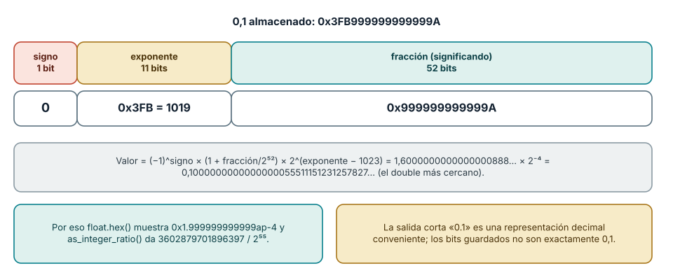
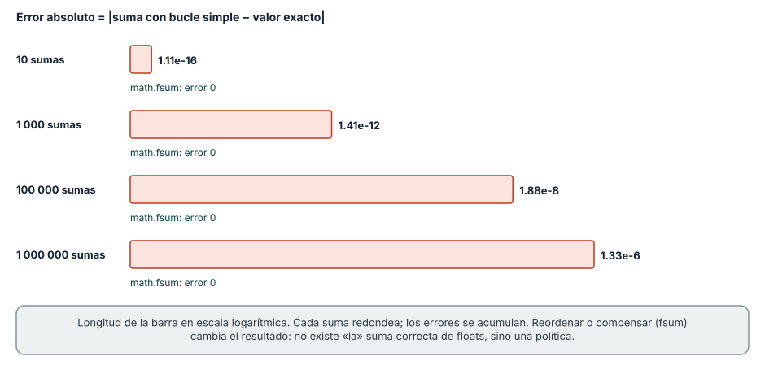
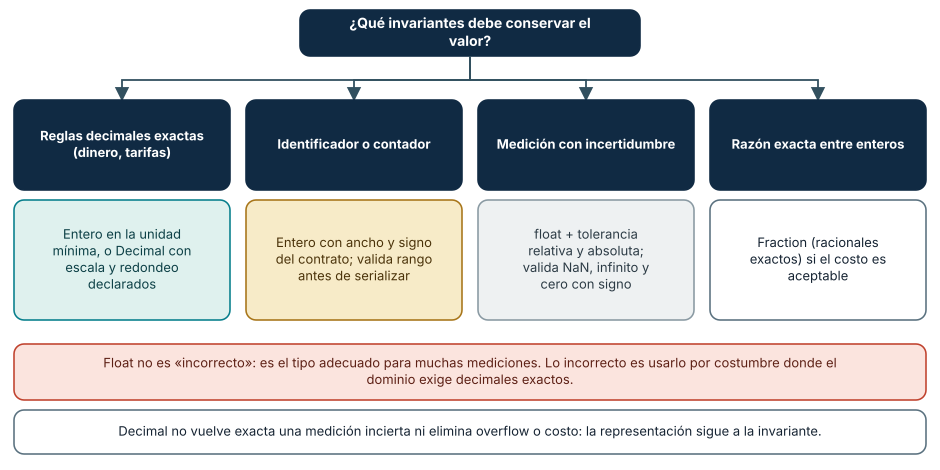

← SE-015 · ↑ Parte 01 · 📚 Índice completo · SE-017 →
Punto profesional y fundamento pedagógico
Punto profesional. La clase existe para evaluar precisión según representación, propagación del error y tolerancia ligada a la escala.
Por qué aparece aquí. Se sitúa después de Texto, Unicode, codificaciones y mojibake y antes de CPU, instrucciones, registros y ciclos de ejecución: convierte el conocimiento anterior en una decisión observable que la clase siguiente podrá reutilizar. La continuidad se comprueba en el artefacto, no por compartir vocabulario.
Error conceptual que debe corregir. Esperar aritmética decimal exacta de coma flotante o elegir epsilon por costumbre.
Secuencia de aprendizaje. Predice qué operaciones serán exactas y cuáles aproximadas antes de inspeccionar ratios o formatos. Compara float, decimal e entero escalado bajo invariantes de dominio, provoca una comparación defectuosa y diseña una prueba que la detecte. Después cambia la escala del problema y revisa si la representación elegida sigue siendo válida.
Evidencia de aprendizaje. Numeric-errors.md con predicción, error absoluto/relativo y contraejemplo inestable. Debe contener predicción previa, observación, explicación causal, contraejemplo, criterio de aceptación y una nota de qué dato haría cambiar la conclusión.
Límite de la conclusión. El ejercicio no certifica estabilidad de algoritmos científicos completos.
Trazabilidad fuente → afirmación
| Fuente primaria u oficial | Afirmación que respalda | Lo que no prueba |
|---|---|---|
| Python Floating-Point Tutorial | explica representación y aproximación | No demuestra por sí sola que el artefacto del estudiante sea correcto. |
Python decimal | documenta aritmética decimal y contextos | No demuestra por sí sola que el artefacto del estudiante sea correcto. |
| Java Virtual Machine Specification SE 27 §2.8 | ofrece otro contrato IEEE 754 especificado | No demuestra por sí sola que el artefacto del estudiante sea correcto. |
Antes de empezar
Ya sabes que los bits necesitan interpretación. El analizador local de eventos calcula el promedio de tiempos y un importe ficticio. Si usa el mismo tipo para ambos, puede mostrar 0.30000000000000004 o acumular una cantidad incorrecta. Esta clase conecta representación con decisión de dominio antes de seguir las operaciones hasta la CPU en SE-017.
Prerrequisitos
Representación binaria de SE-014, Python 3.11+, fracciones y exponentes básicos.
Problema auténtico
Un sistema compara 0.1 + 0.2 == 0.3 y rechaza una conciliación. Redondear la pantalla oculta el síntoma, pero no define cómo calcular, comparar ni acumular.
Objetivos observables
Explicarás rango de enteros fijos, representación binaria aproximada, redondeo, NaN e infinito; elegirás entre entero escalado, decimal y float; y diseñarás pruebas de frontera.
Temas y por qué importan
| Tema | Mecanismo | Por qué importa |
|---|---|---|
| Enteros | rango depende de ancho y signo | controla IDs, contadores y overflow |
| Coma flotante | significando y exponente aproximan reales | permite gran rango con precisión finita |
| Redondeo | asigna resultados no representables | acumula error y afecta comparaciones |
| Modelo de dominio | elige representación por invariantes | evita usar float por costumbre |
Mapa conceptual
Ver la notación fuente del diagrama
flowchart LR
D[Valor del dominio] --> M{Modelo}
M --> I[Entero escalado]
M --> F[Binario flotante]
M --> C[Decimal]
I --> O[Operaciones y límites]
F --> O
C --> O
O --> V[Validación]No existe un tipo mejor en absoluto. La decisión depende de rango, exactitud, operaciones, interoperabilidad y costo.
Conceptos y decisiones
1. Los enteros de máquina tienen ancho; Python abstrae ese límite
En formatos fijos, rango y overflow siguen las reglas de SE-014. Python expande sus enteros mientras haya memoria, pero al serializar, llamar código nativo o usar una base de datos reaparece el ancho. Probar solo en Python puede ocultar incompatibilidad con un campo de 32 bits.
2. Coma flotante distribuye precisión sobre un rango amplio
IEEE 754 representa valores mediante signo, exponente y significando. Entre valores representables hay huecos que crecen con la magnitud. 0.1 no tiene expansión binaria finita, por lo que se guarda el valor representable más cercano bajo una regla de redondeo. La salida corta de Python es una representación decimal conveniente, no los bits exactos.

Cómo leer la figura. Un double reparte sus 64 bits en un bit de signo, once de exponente y cincuenta y dos de fracción. El número 0,1 se guarda como 0x3FB999999999999A: el exponente almacenado es 1019, que tras restar el sesgo 1023 vale -4, y la fracción 999999999999A es el patrón repetido de la expansión binaria de 0,1 redondeado al último bit. Calculado, el valor guardado es 0,1000000000000000055511151231257827…, el double más cercano a 0,1. Puedes verlo con (0.1).hex(), que devuelve 0x1.999999999999ap-4, y con (0.1).as_integer_ratio(), que devuelve 3602879701896397 sobre 36028797018963968 (2⁵⁵). Dónde deja de valer: la figura es para el formato de doble precisión. La precisión simple (32 bits, float32) tiene 8 bits de exponente y 23 de fracción, y guarda 0,1 como 0,10000000149011612; y los números *subnormales*, cercanos a cero, usan un exponente reservado y pierden precisión de forma gradual.
3. Error de representación no significa implementación defectuosa
La operación puede ser correctamente redondeada y diferir del número real ideal. Sumar muchos términos, restar magnitudes cercanas o mezclar escalas cambia el error. Reordenar operaciones puede cambiar el resultado. Para comparar floats se usa una tolerancia justificada por escala y dominio; una constante universal crea falsos positivos.

Cómo leer la figura. Cada barra es el error absoluto de acumular 0,1 con un bucle de += y su longitud está en escala logarítmica. Con diez sumas el resultado es 0,9999999999999999 (un error de 1,1 × 10⁻¹⁶); con un millón es 100000,00000133288 (un error de 1,3 × 10⁻⁶). Cada suma redondea y los redondeos se acumulan. math.fsum, que lleva sumas parciales exactas, devuelve 100000,0. Dónde deja de valer: el resultado depende del orden de las operaciones y de la versión del intérprete. Desde Python 3.12, la función integrada sum aplica una suma compensada con números flotantes, de modo que sum([0.1] * 1_000_000) devuelve 100000.0 y *oculta* el error del bucle; en versiones anteriores producía el resultado acumulado. Una prueba que pasa o falla según la versión de Python señala que el código depende de un detalle de implementación y no de un contrato.
4. NaN, infinito y cero con signo requieren política
IEEE 754 incluye infinitos, NaN y ceros con signo. NaN no es igual a sí mismo y puede propagarse; usarlo como dato faltante sin política mezcla ausencia con resultado indefinido. Validar entrada y salida evita que un valor especial atraviese decisiones que esperaban números finitos.
5. Dinero, mediciones y probabilidades piden modelos distintos
Para dinero, entero en unidad mínima o decimal puede conservar reglas legales; aun así se debe fijar redondeo y escala. Float es adecuado para muchas mediciones científicas si se modela incertidumbre. Decimal no vuelve exacta una medición incierta ni elimina overflow o costo. La representación se elige por invariantes, no por apariencia.

Cómo leer la figura. El punto de partida es la pregunta sobre qué debe conservar el valor, no el tipo. El dinero exige reglas decimales exactas y se modela con enteros en la unidad mínima o con Decimal; los identificadores y contadores exigen ancho y signo declarados; las mediciones admiten float si se define una tolerancia y se validan los valores especiales; una razón exacta entre enteros puede usar Fraction. Dónde deja de valer: el árbol no resuelve requisitos de interoperabilidad. Si un sistema externo fija un formato (por ejemplo, un campo de 32 bits o un decimal con dos posiciones), ese contrato manda aunque tu dominio sugiera otra representación.
6. Cómo se pierde información: absorción, cancelación y orden de las operaciones
Entre dos double consecutivos hay un hueco que crece con la magnitud, medido en ULP (*unit in the last place*). Cerca de 1 el hueco es de unos 2,2 × 10⁻¹⁶ (el épsilon de máquina); cerca de 10¹⁶ es 2. La primera consecuencia es la *absorción*: 1e16 + 1 es igual a 1e16, porque 1 es menor que la mitad del hueco; un acumulador grande ignora sumandos pequeños. Con enteros pasa algo parecido en el límite 2⁵³: float(253) + 1 == float(253) es verdadero, y por encima de 2⁵³ un float ya no representa todos los enteros.
La segunda es la *cancelación*: restar valores casi iguales borra los dígitos en común y deja el error de redondeo como resultado dominante. (1 + 1e-16) - 1 es 0.0 en lugar de 1e-16, y 0.1 + 0.2 - 0.3 es 5.551115123125783e-17 en lugar de cero. La tercera es que la suma de floats no es asociativa: (a + b) + c puede diferir de a + (b + c). Un acumulador que suma 1e16 y luego diez veces 1.0 con un bucle simple vuelve a 1e16; math.fsum devuelve 1.000000000000001e+16, el valor correcto. Por eso los resultados de una reducción en paralelo pueden diferir según el número de hilos, y por eso las pruebas numéricas comparan con tolerancia y no con igualdad exacta.
7. Redondeo: modos, empates y el caso de 2,675
Redondear exige elegir un *modo*. Python usa por defecto «redondeo al par más cercano» (a veces llamado bancario): round(0.5) es 0, round(1.5) es 2 y round(2.5) es 2, porque los empates van al entero par. Esto evita sesgo acumulado, pero choca con las reglas legales que exigen «medio hacia arriba». Un caso aparente de error es round(2.675, 2), que devuelve 2.67 y no 2.68: el float 2,675 en realidad vale 2,67499999999999982236…, de modo que *no hay empate* y el redondeo es correcto. Decimal("2.675").quantize(Decimal("0.01")) devuelve 2.68, porque en Decimal el valor sí es exactamente 2,675 y el empate se resuelve al par (8 es par).
La moraleja es declarar el modo de redondeo en el contrato y probarlo con casos de empate. En decimal, el contexto define precisión y modo (ROUND_HALF_EVEN, ROUND_HALF_UP, etc.), y puede establecerse por operación. Una política habitual para facturas es redondear solo en el punto definido por la ley (por línea o por total) y calcular todo lo demás sin redondear.
8. Enteros escalados: dinero en la unidad mínima y los límites que reaparecen
Modelar un importe como un entero en centavos evita el error de representación, pero traslada las decisiones a otros puntos. La división ya no es exacta: divmod(100, 3) es (33, 1), y repartir 100 centavos entre tres personas obliga a decidir quién recibe el centavo restante (una política común asigna el resto a las primeras personas, de modo que se paga 34, 33, 33 y la suma se conserva). Un impuesto del 19 % sobre 1 999 centavos produce 379,81 centavos: debe definirse a qué entero se redondea y en qué momento. Lo que nunca debe ocurrir es que la suma de las partes difiera del total sin explicación.
El otro límite reaparece al cruzar fronteras: Python no desborda, pero una base de datos o un protocolo con un campo de 32 bits sí. struct.unpack('>i', (2**31).to_bytes(4, 'big'))[0] da -2147483648: el mismo patrón que Python considera 2 147 483 648 se interpreta como negativo en el campo con signo. La validación de rango antes de serializar, con pruebas en el máximo, el máximo más uno y los valores negativos, es la defensa.
Caso conductor: promedio y tarifa del analizador local de eventos
El analizador local de eventos calcula latencia media con float y conserva muestras originales; no usa igualdad exacta. Una tarifa ficticia se representa en centavos enteros. El informe declara rango, unidad y política de redondeo. Cambiar a Decimal se evalúa por contrato externo, no para “arreglar todos los decimales”.
Definiciones de trabajo
- precisión: cantidad de información significativa representada;
- rango: intervalo de magnitudes disponibles;
- redondeo: selección de un valor representable;
- ULP: distancia local entre valores flotantes consecutivos;
- NaN: valor especial para resultados no numéricos.
Glosario
Significando contiene dígitos significativos. Overflow/underflow exceden rango alto o pequeño. Cancelación pierde información al restar valores cercanos.
Ejemplo mínimo
0.1 + 0.2 produce un float cercano a 0.3. math.isclose puede comparar mediciones con tolerancia; para tres pagos de 10 centavos se prefieren 10 + 10 + 10 centavos.
Ejemplo profesional
Un contador Java de 32 bits se exporta desde Python. Aunque Python no desborde, el contrato sí. Se valida rango antes de serializar y se prueba máximo, máximo+1 y valores negativos.
Práctica guiada
Usa como base el laboratorio ejecutable de la Parte 01; trabaja sobre una copia o conserva tus salidas en el directorio work/SE-016/.
- Usa
float.hex()yas_integer_ratio()para inspeccionar 0.1. - Compara suma repetida,
math.fsumy Decimal bajo el mismo conjunto. - Modela importe como centavos y tiempo como float con unidad.
- Prueba infinito, NaN, -0.0 y límites de serialización de 32 bits.
- Registra criterio de comparación y contraejemplo en
numeric-decision.md. - Entrega
numbers.py, resultados y limpieza local.
Ejercicios
- Explica por qué imprimir 0.1 no muestra necesariamente todos sus bits.
- Diseña tolerancia para una medición y justifica escala.
- Compara entero escalado y Decimal al cambiar número de decimales.
Reto verificable
Una revisión recibe cinco operaciones y debe predecir cuáles son exactas, aproximadas o inválidas bajo tu contrato. Aprueba si las pruebas cubren fronteras y valores especiales.
Preguntas frecuentes
¿Nunca debo usar float para dinero?
La regla depende del contrato, pero binario flotante rara vez conserva exactamente fracciones decimales legales.
¿Redondear al final elimina el error?
No; define presentación, pero operaciones previas pueden haber acumulado o amplificado error.
¿Qué significa math.isclose y cómo elijo sus tolerancias?
Compara con una tolerancia relativa (rel_tol, por defecto 1e-09) y una absoluta (abs_tol, por defecto 0). La tolerancia relativa escala con la magnitud y no sirve cerca de cero, donde hace falta una absoluta. Elígelas desde el dominio: la incertidumbre de la medición, el error aceptable para la decisión que se tomará con el resultado, no desde un valor «que haga pasar la prueba».
¿Decimal es siempre más lento y peor que float?
Es más lento y consume más memoria, pero en Python 3 la implementación es en C y suele bastar para volúmenes moderados. Lo decisivo no es el costo sino la invariante: Decimal representa exactamente los decimales que se le dan, con una precisión configurable, y no cambia que una medición física sea incierta. Mide antes de descartarlo y evita mezclar float y Decimal en la misma operación.
¿Cómo comparo valores que pueden ser NaN?
NaN no es igual a sí mismo: float('nan') == float('nan') es falso. Para detectarlo usa math.isnan. Decide una política: rechazar la entrada, propagarlo y marcar el resultado como inválido, o sustituir un valor documentado. No uses NaN como valor faltante sin que el contrato lo diga, porque se mezclará con resultados indefinidos.
Fallo controlado y diagnóstico
Usa igualdad exacta para 0.1 + 0.2. Inspecciona ratios, identifica representación y reemplaza la comparación o el modelo según el dominio, no solo el literal.
Un segundo fallo controlado es la acumulación. Escribe un bucle que sume 0,1 un millón de veces y compara el resultado con math.fsum, con sum y con Decimal, registrando la versión de Python. Síntoma: el bucle da 100000.00000133288 mientras sum y fsum dan 100000.0. Causa: errores de redondeo acumulados que sum compensa desde Python 3.12. Corrección: decide si el cálculo requiere exactitud (entero escalado o Decimal) o tolerancia (compara con math.isclose y una tolerancia relativa y absoluta justificadas), y escribe una prueba que *no* dependa de la versión del intérprete. Documenta qué dato mostraría que tu tolerancia es demasiado laxa o demasiado estricta.
Errores comunes y cómo corregirlos
| Síntoma | Causa | Corrección |
|---|---|---|
| centavos faltantes | float usado sin política decimal | usa entero escalado o Decimal con redondeo |
| prueba pasa en Python y falla al integrar | ancho externo omitido | valida rango del contrato |
| tolerancia fija para toda magnitud | escala ignorada | combina tolerancia relativa y absoluta justificadas |
| NaN atraviesa el cálculo | valores especiales no validados | define entrada, propagación y rechazo |
Entorno y archivos clave
Python 3.11+, math, decimal, struct; numbers.py, numeric-decision.md, results.json.
Seguridad, ética y accesibilidad
Un error numérico puede distribuir dinero, riesgo o acceso de forma desigual. Muestra unidad y redondeo en lenguaje comprensible; no uses precisión visual para aparentar certeza.
Puente hacia el trabajo con agentes
Un asistente de IA escribe float para dinero con la misma naturalidad con que escribe cualquier otro tipo, y su código pasa pruebas con valores «bonitos». Traduce esta clase en un requisito de la tarea: el contrato nombra el tipo y el redondeo, las pruebas incluyen empates (0,5; 1,5; 2,5), acumulaciones largas y valores especiales, y la revisión comprueba que la implementación no sustituya Decimal o enteros escalados por un float «para simplificar». Además, los modelos de lenguaje pueden *calcular* con errores aritméticos; los resultados numéricos que un agente afirma deben provenir de una ejecución verificable, no de su texto. La evaluación de ese flujo (partes de IA asistida y evals) usa estas mismas fronteras.
Transferencia
Compara el mismo cálculo en una hoja o segundo lenguaje y atribuye diferencias a representación y reglas.
Evaluación y evidencia
Se exigen bits o ratios observados, decisión por dominio, pruebas límite y explicación de error.
Fuentes
- Python Floating-Point Tutorial explica representación y aproximación.
- Python
decimaldocumenta aritmética decimal y contextos. - Java Virtual Machine Specification SE 27 §2.8 ofrece otro contrato IEEE 754 especificado.
- David Goldberg, «What every computer scientist should know about floating-point arithmetic», *ACM Computing Surveys* 23(1), 1991, DOI 10.1145/103162.103163: referencia clásica sobre redondeo, cancelación y errores; respalda las secciones 6 y 7.
- Python
math:fsum,isclose,ulpyisnan, usadas en la clase y en las figuras.
Límites y siguiente paso
No es análisis numérico completo. SE-017 sigue las operaciones desde instrucciones y registros.